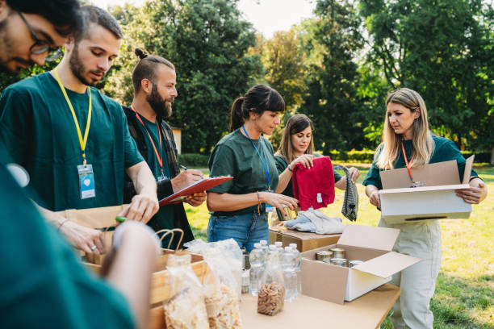
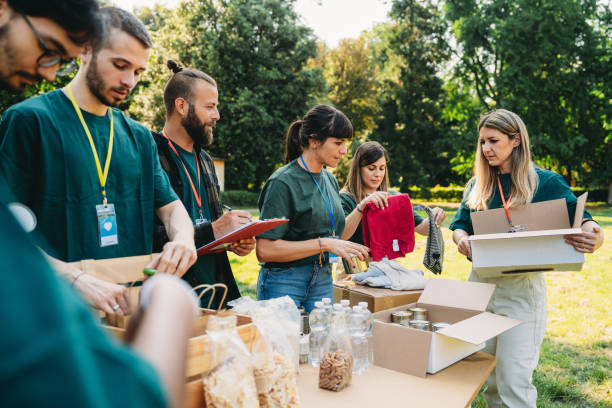

Welcome to Food Bank
Join Hands to Fight Hunger: Donate to Food Bank
"Where we work to reduce hunger and food waste. By rescuing surplus food and distributing it to those in need,we’re creating a community where everyone has access to nutritious meals.
Let’s make a difference—because No food should go to Waste, and No one should go Hungry. "
"Join us in the fight against hunger and food waste! Together, we can create a healthier, more sustainable world."
Thank you for joining us !! This application is your gateway to accessing resources, managing donations,
and staying connected with our mission to ensure that no one goes without a meal.
Whether you're here to request assistance, volunteer, or donate, we are committed to making the process simple, transparent, and impactful.
Together, we can create a stronger, more compassionate community.
What We Do
 'Food-Bank' is
a social platform that brings
together volunteers and donors interested in donating food. Aimed at eliminating food wastage,
'Food-Bank' is a unique concept started in Indore.
'Food-Bank' is
a social platform that brings
together volunteers and donors interested in donating food. Aimed at eliminating food wastage,
'Food-Bank' is a unique concept started in Indore.
Our work in food donation focuses on addressing hunger and reducing food waste by redistributing surplus food to those in need. We partner with food producers, grocery stores, restaurants, and other organizations to collect excess food that is safe and nutritious but would otherwise go to waste. This food is then sorted, stored, and delivered to food banks, shelters, and community programs that serve vulnerable populations.
Through our efforts, we not only provide meals to individuals and families facing food insecurity but also promote sustainability by minimizing environmental impacts associated with food waste. By building a network of donors, volunteers, and recipients, we create a compassionate community dedicated to ending hunger and supporting healthier, more sustainable lives.
How It Works
 A food donation application is a digital platform designed to connect food donors, recipients,
and intermediaries such as non-profit organizations to reduce food waste and combat hunger.
Here's how Our application typically works:
A food donation application is a digital platform designed to connect food donors, recipients,
and intermediaries such as non-profit organizations to reduce food waste and combat hunger.
Here's how Our application typically works: 1. User Registration
2. Food Donation Process
3. Food Matching
4. Logistics Coordination
5. Feedback and Reporting
6. Additional Features
Gallery


 
